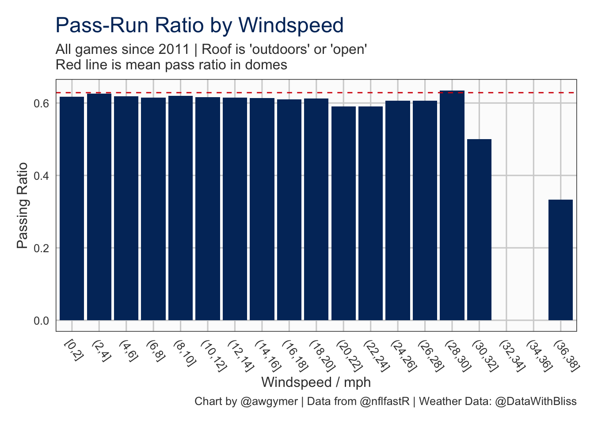
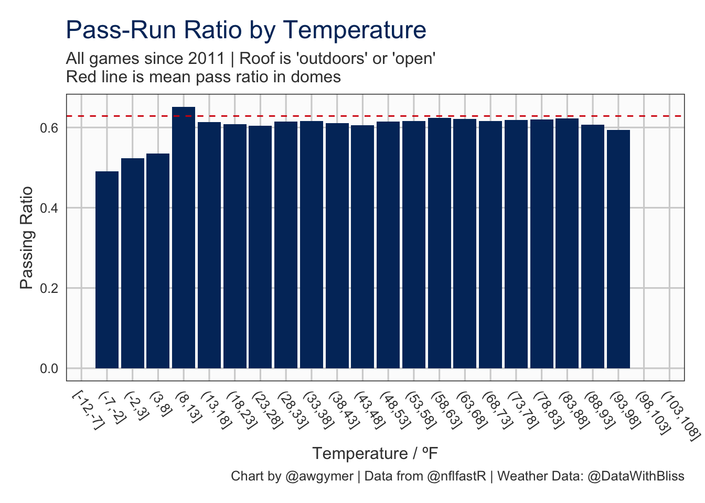
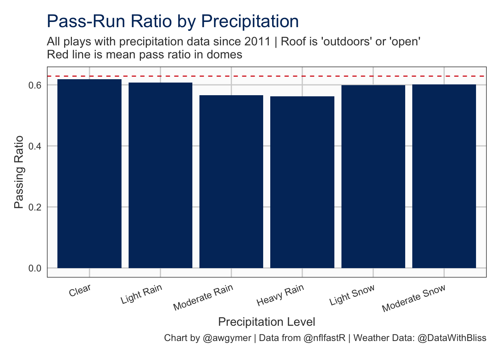
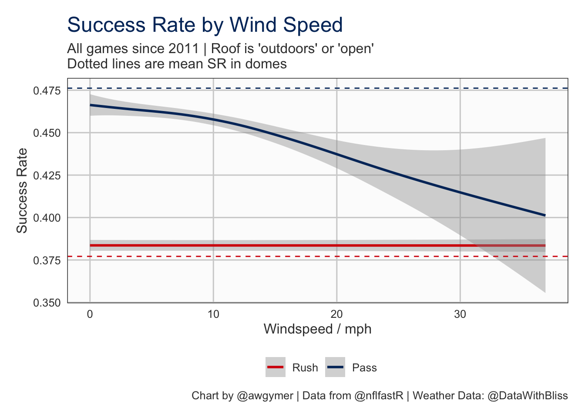
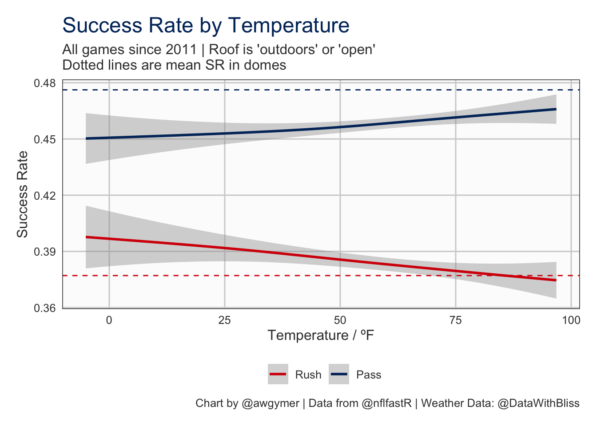
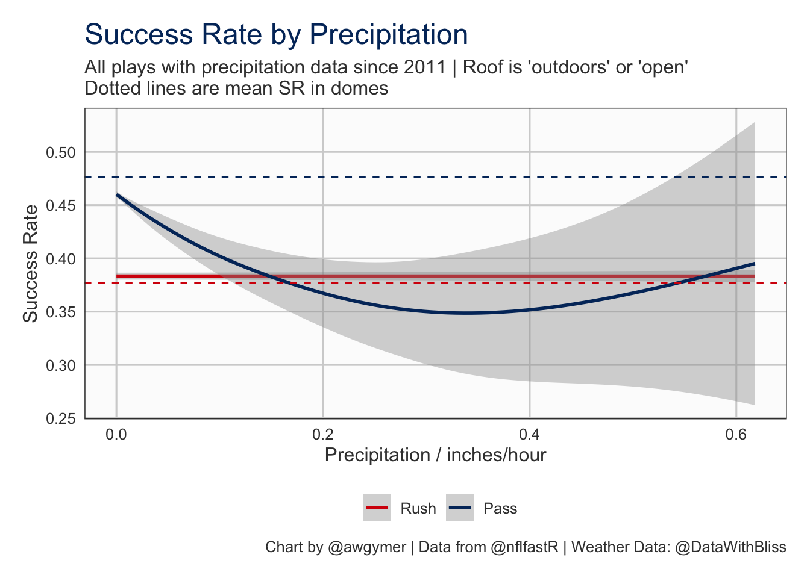
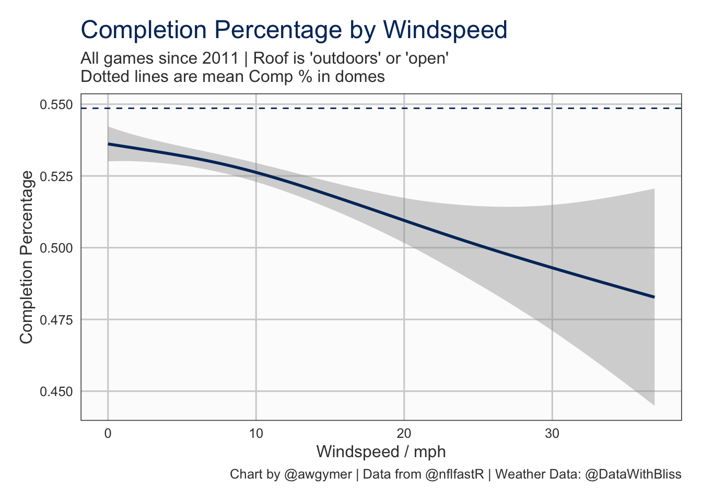
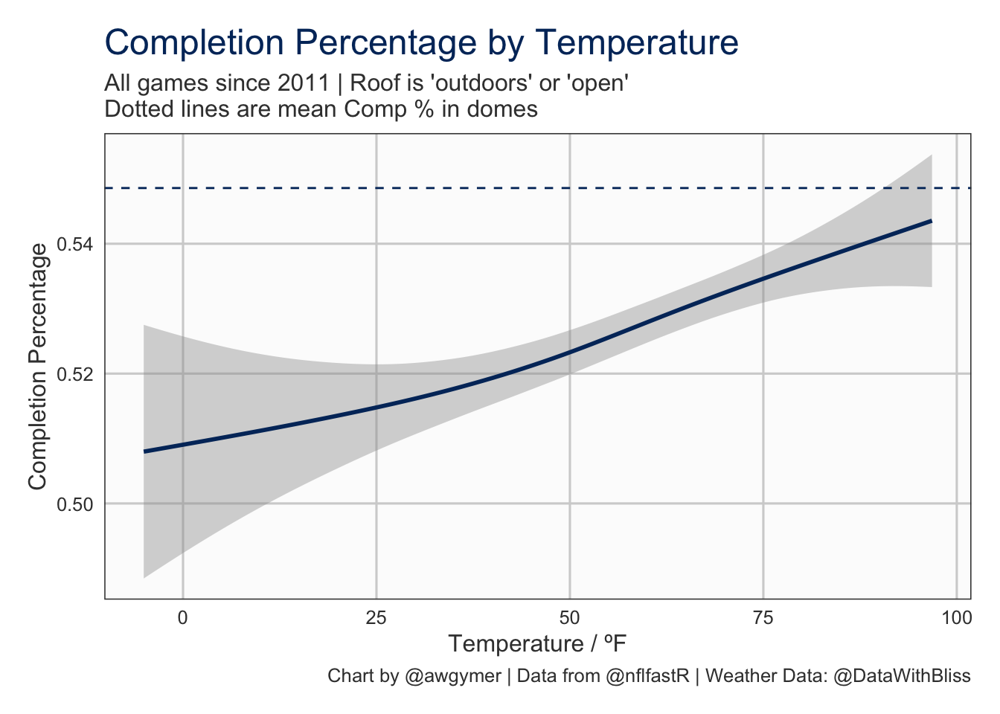
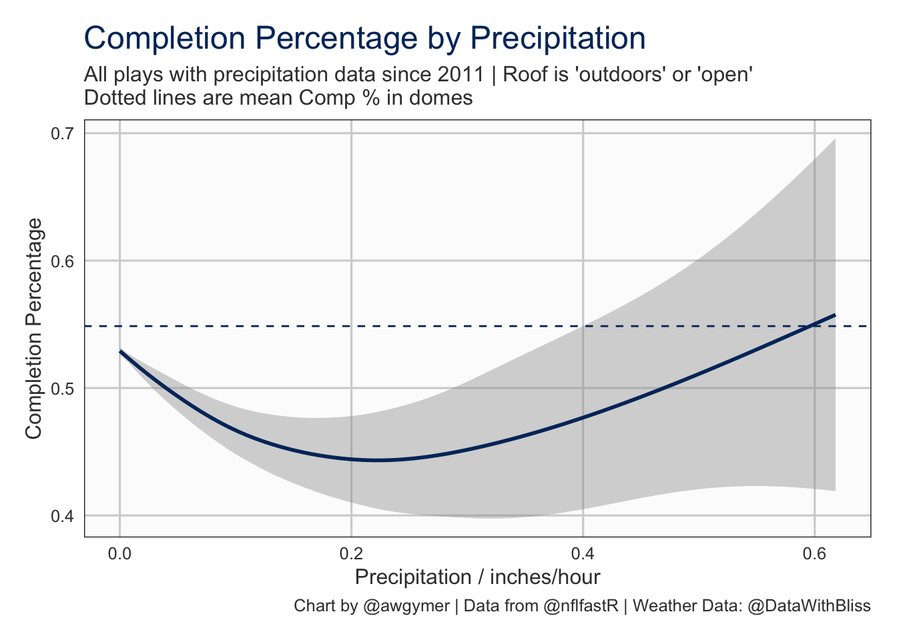

Last updated: 2020-07-15 00:08:42
A few days ago Tom Bliss (@DataWithBliss) and Michael Lopez (@StatsbyLopez) released some weather data for NFL games dating back to 2000. I decided this would be a good opportunity to jump back into looking at the play-by-play data from nflfastR.
The weather data provided is keyed by the old style NFL API game ids and UTC time and is roughly hourly on the day of the match. Off the bat I figured this was simply going to be a case of joining the two datasets and rolling weather observations backwards or forwards to the for each play. So I loaded up both datasets and … DAMN. The nflfastR data has KO time and date but at a play-by-play level there is only game clock time available. Unfortunately unlike football, or to a lesser extent rugby, an American football game doesn’t have an almost continuously running clock which roughly allows real time to be calculated given KO time and game time. Back to the drawing board.
As you may know nflfastR pulls from the NFL API which recently changed quiteb significantly and I recalled that someone remarked that there were different/new variables now available. So I took a quick look at the raw data from the new API and low and behold there is a timeOfDay variable avaialble giving the realtime in UTC. WE ARE BACK IN BUSINESS. So now we are only working with data from 2011 onwards. I used some very basic python to scrape out the timeOfDay, play_id, and game_id to allow me to join the pbp data to the times.
# Load data from local SQLite DB
connection <- DBI::dbConnect(RSQLite::SQLite(), "../db/pbp_db")
pbp <- as.data.table(DBI::dbReadTable(connection, 'nflfastR_pbp'))
DBI::dbDisconnect(connection)
# Only want 2011 onwards
pbp <- pbp[season >= 2011]
# Load and merge in the play times.
playtimes <- fread('../data/play_realtimes.csv')
pbp[playtimes, real_time:=i.real_time,on=c(nfl_api_id='game_id', play_id='play_id')]So now we have play by play data with real time for each play. Unfortnately it isn’t that simple. The timeOfDay variable is only the UTC time and although we have the date of the game some late games can run over two calendar dates in UTC time which we need to join with the weather data.
The solution is to use the starting date and time in UTC, convert the real times to full datetimes using the game date, and then adjust the date where games have clearly crossed over into the next day.
# Get the starting datetime as UTC
pbp[,utc_start:=lubridate::as_datetime(paste(game_date, start_time), format="%Y-%m-%d %H:%M:%S", tz='America/New_York')]
# Convert valid real times to actual datetimes
pbp[
!is.na(real_time) & real_time != '',
real_datetime:=lubridate::as_datetime(paste(game_date, real_time), format="%Y-%m-%d %H:%M:%S", tz='UTC')
]
# Fill the missing datetimes from the next or last available.
# Seems to affect first and last plays of games so need to do both
pbp[,real_datetime:=nafill(real_datetime, 'nocb'),by=game_id]
pbp[,real_datetime:=nafill(real_datetime, 'locf'),by=game_id]
# Adjust date forward one day if the real datetime is earlier than the real starttime
# caused by games that span multiple calendar days in UTC time
pbp[utc_start > real_datetime, real_datetime:=real_datetime + lubridate::days(1)]Excellent. We now finally have real UTC datetimes for all plays since 2011.
Now let’s look at the weather data. The times are in local time but the UTC offset is provided in the weather repo games.csv so we can join these and calculate the real UTC time easily. Whilst we are cleaning the weather data we also pull in the new style game ids from Lee Sharpe’s games.csv to allow us to join easily with the nflfastR data.
gms <- fread('http://www.habitatring.com/games.csv')
weatherdat <- fread('https://raw.githubusercontent.com/ThompsonJamesBliss/WeatherData/master/data/games_weather.csv')
weathergms <- fread('https://raw.githubusercontent.com/ThompsonJamesBliss/WeatherData/master/data/games.csv')
#Add TZoffset to the full weather data set
weatherdat[weathergms, tzoffset:=i.TZOffset,on='game_id']
#Join with Lee Sharpe's games CSV to get the new style game_id used by nflfastR
weatherdat[gms, new_game_id:=i.game_id, on=c(game_id='old_game_id')]
#Create a proper datetime column with the correct UTC offset adjustment
weatherdat[, utc_time:=lubridate::as_datetime(TimeMeasure, format='%m/%d/%Y %H:%M', tz='UTC')]
# Closing brackets help with returning the correct result
# https://cran.r-project.org/web/packages/data.table/vignettes/datatable-faq.html#why-do-i-have-to-type-dt-sometimes-twice-after-using-to-print-the-result-to-console
weatherdat[, utc_time:=utc_time - lubridate::hours(tzoffset)]Ok, let’s now join the data using a rolling join to pull from the nearest time where there’s not an exact match. We can also check how complete our weather data is.
with_weather <- weatherdat[pbp, on=c(new_game_id='game_id', utc_time='real_datetime'), nomatch=NULL, roll='nearest']
# Check if any windspeed values are NA
with_weather[is.na(WindSpeed), .N]## [1] 0# Check if any windspeed values are NA
with_weather[is.na(Temperature), .N]## [1] 0# Check if any precipitation values are NA
with_weather[is.na(Precipitation), .N]## [1] 24978# Check if any estimated condition values are NA
with_weather[is.na(EstimatedCondition), .N]## [1] 24978The most useful weather columns are likely to be WindSpeed, Temperature, Precipitation, and EstimatedCondition. It seems all out plays have wind and temperature information but 24978 plays out of 435267 are missing precipitation and condition data; the fact they are the same number suggests its the same rows but we’ll check that anyway. We can also do some further digging to see if the NA values are random or affect only some games.
# Check if the NA rows for precipitation and Estimated condition are the same
with_weather[is.na(Precipitation) & is.na(EstimatedCondition), .N,]## [1] 24978# Check how many games are NA and of those how many are all NA
with_weather[, .(na_pct=sum(is.na(Precipitation))/.N), by=game_id][na_pct!=0][,.N,by=na_pct==1]## na_pct N
## 1: TRUE 29
## 2: FALSE 266So we have 295 games with some level of NA weather data, of which 29 have no non-NA values. Let’s see where those games are.
with_weather[, .(na_pct=sum(is.na(Precipitation))/.N), by=game_id][na_pct==1][gms, on=.(game_id=old_game_id),nomatch=NULL][,.N,by=stadium][order(-N)]## stadium N
## 1: Wembley Stadium 14
## 2: Heinz Field 9
## 3: Twickenham Stadium 3
## 4: Azteca Stadium 2
## 5: Rogers Centre 1So most of the games with all NA data are at Wembley. That seems likely to be an issue with that weather station.
I strongly considered filling these values with data rolled from the next nearest available time slot, but ultimately I decided to exclude any plays with an NA from analysis involving preciptiation/condition at this point since, as Tom explains even a less crude linear interpolation isn’t well suited to infilling precipitation. It might be better to exclude any games with any NA entirely, but this is just supposed to be a quick and dirty look at the data so I’m not going to worry about that for now.
First I wanted to look at whether the weather appears to affect a teams playcalling. We already have some bins for the condition based on precipitation but I also want to create some for wind speed and temperature too.

So we appear to have a slight reduction in passing when it gets REALLY windy, however it’s worth noting that over 30mph the sample sizes are very small.

Once again we seem to see a reduction in passing at the extremes. For sub-zero temperatures the sample sizes are very small, and although they are larger at the very warm end they are still considerably smaller than the bulk of the bins.

It’s a similar story again with precipitation levels. It seems that we get a reduction in passing volume as the rain increases, but once again the sample sizes for anything other than Clear or Light Rain are considerably reduced.
So it seems like there might be a slight impact on playcalling but small sample sizes for inclement weather make it hard to draw any serious conclusion.
So there might be a slight reduction in passing in inclement weather but do passing and rushing success see any change in differing conditions?

It looks like a definite drop in passing success rate when the wind picks up. As expected the wind has no effect on rushing success, but it’s interesting to note that the success rate for rushing appears higher than in a dome.

So as it gets warmer we appear to see an increase in passing success rate and a reduction in rushing success rate. Do those big backs wear out quicker in the heat? Who knows.

Well, well, well. It looks like a downpour might be the thing to really put the dampners on the passing game. However in reality the sample sizes for passing in heavy rain are so small that drawing any real conclusion is a fools errand, as evidenced by the wide confidence interval.

So high winds do seem to reduce the completion percentage but as well as the previous caveats about small sample sizes it should be considered that all the other variables known to affect completion percentage are being ignored here. It might be that increased wind is disproportionately affecting the completion of longer passes for example.

There seems to be a pretty strong correlation between completion percentage and temperature. Cold hard balls and stiff fingers make for a bad combination perhaps?

What on earth. So completion percentage goes up in the heaviest rain? Probably not, it’s much more likely down to very small sample sizes but it could be an example of not accounting for other known factors in completion percentage causing odd results - perhaps in heavy rain teams opt to make more shorter, safer passes?
There is definitely some insights to be drawn from weather data linked to play-by-play data. However linking data closely with regards to time is tricky and only easily possible with a small subset of the overall data and missing values make this harder. Missing values may also be an issue in using such data in any modelling.